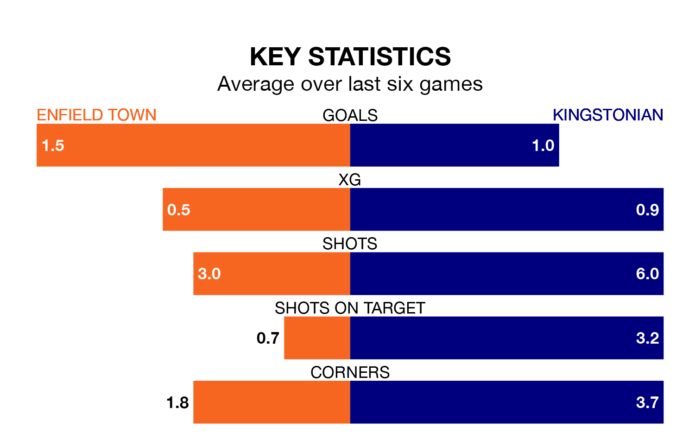

Kingstonian travel to the Queen Elizabeth Stadium looking to secure a first win in 16 Isthmian Premier Division games against Enfield Town on Saturday.
Kingstonian have lost 12 and drawn three matches since they last earned three points – against Folkestone Invicta on October 21.
They face an Enfield side who have won seven and drawn three over that time.
Kingstonian are bottom of the table after 26 games, of which they have won three and drawn four, earning 13 points.
Enfield are 17 places ahead of the away team in fifth, with 14 wins and six draws putting them on 48 points.
With 54 goals in 28 games so far this season, Town are the league's joint-third-highest scorers with 1.9 goals per game. And they are conceding fewer than average, letting in 43 goals at a rate of 1.5 per game.
Kingstonian, meanwhile, are below average scorers, with 1.4 goals per game, compared to a league average of 1.6. They have conceded 2.3 goals per game.
In the last 10 years, Enfield and Kingstonian have played each other on 17 occasions. Enfield won eight of them, Kingstonian seven, and they drew twice.
On average, Enfield scored 1.6 goals and Kingstonian 1.4 in those matches.
Their last meeting was on October 18, when Enfield won 3-2 away.
Enfield's last match was on February 3, a 3-0 win against Canvey Island.
Kingstonian lost 3-1 against Hastings United last time out, also on February 3.
Updated: 10:01 (UTC), 06/02/24